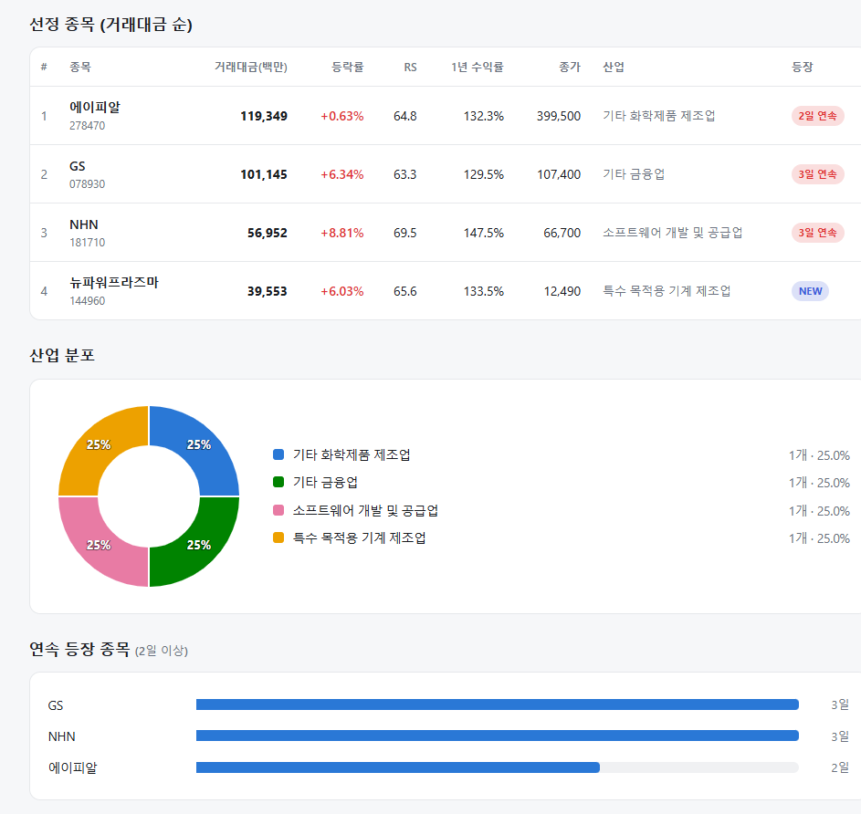
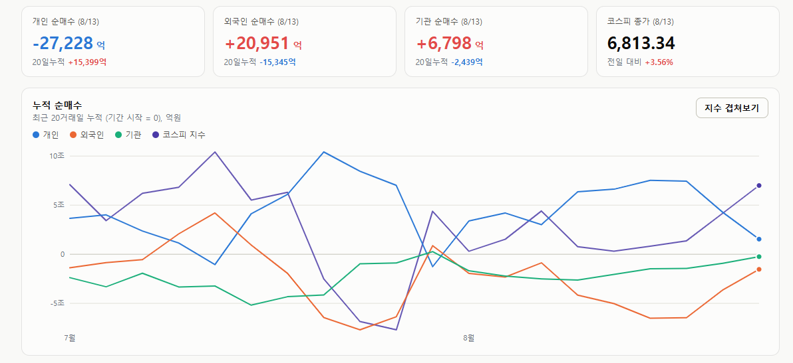
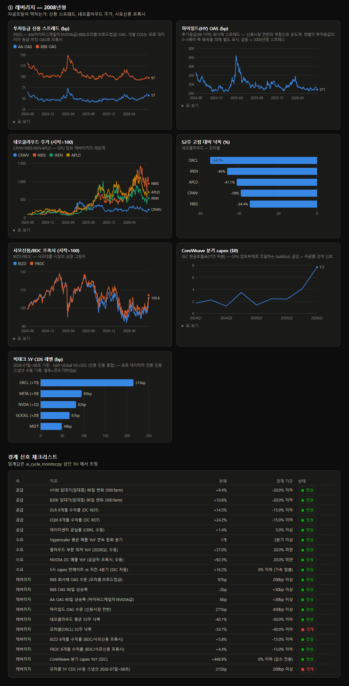

매일의 주도주 정리를 위해 기록합니다.
연속적으로 나온 종목들 또는 상승 후 조정받는 종목 위주로 리서치 해보시면 좋을 것 같습니다.

*오늘의 퀀트픽은 없습니다.
연속 종목으로 GS(3회), NHN(2회), 에이피알(2회) 출현했습니다.
#주도섹터
반도체 메가 캡 및 IT·전자부품
주요 종목: SK하이닉스(+6.12%), 삼성전자(+4.50%), 삼성전기(+12.58%), LG이노텍(+17.29%), 윈팩(+29.92% 상한가), 아주IB투자(+29.89% 상한가), NAVER(+5.34%), 미래에셋증권(+4.11%), 비에이치(+4.76%), 지엔씨에너지(+15.35%).
분석: 전자장비와기기 업종이 +9.28%, 반도체와반도체장비 업종이 +5.15%, 반도체 대표주 테마가 +5.22% 상승했습니다. 외국인의 2.1조 원 매수세가 SK하이닉스(+6.12%)와 삼성전자(+4.50%)에 집중되었으며, LG이노텍(+17.29%) 및 삼성전기(+12.58%) 등 기판·부품주 전반으로 메가 캡 리레이팅 온기가 확산되었습니다.
창업투자 및 플랫폼·개별 테마
주요 종목: 아주IB투자(+29.89%), 금호타이어(+10.65%), NAVER(+5.34%).
분석: 창업투자 업종(+5.91%)과 야놀자 상장 테마(+7.97%)로 순환 매기가 유입되었습니다. 아주IB투자가 가격제한폭까지 오른 가운데, 금호타이어(+10.65%)와 NAVER(+5.34%) 등 시클리컬 및 대표 플랫폼주로 수급 범주가 확장되었습니다.
#조정섹터
조정 섹터: 전력 유틸리티 및 K-뷰티 유통 일부
주요 종목: 한국전력(-6.77%), 실리콘투(-9.72%).
분석: 대형 IT주로 유동성이 강하게 쏠림에 따라, 전력 대장주인 한국전력(-6.77%)과 유통주인 실리콘투(-9.72%) 등 단기 상승세를 보였던 일부 개별 품목에서 차익 실현 매물이 출회되었습니다.
#수급동향

코스피 지수는 +3.56% 상승한 6,813.34로 마감하며 6,800선을 돌파했습니다. 대형주 중심의 코스피 200 지수 역시 +4.06% 상승한 1,071.24를 기록했습니다. 코스닥 지수는 +0.29% 소폭 상승한 861.37로 장을 마쳤습니다.
유가증권시장에서 외국인 투자자가 2조 951억 원(20일 누적 매도세 대폭 소화), 기관 투자자가 6,798억 원을 동반 순매수하며 쌍끌이 장세를 형성했습니다. 반면 개인 투자자는 2조 7,228억 원을 순매도하며 차익 실현 물량을 출회했습니다.
AI 사이클은 어떻게 끝나는가 3편(완)_레버리지(2008년형)

1편(공급과잉)과 2편(수요둔화)의 경계 신호는 모두 0개였습니다. 마지막 경로는 다릅니다. 세 축 중 유일하게, 이미 경고등이 켜져 있습니다.
2008년, 위기는 어떤 순서로 왔나
2008년의 본질은 부동산 가격 하락이 아니라 차환의 실패였습니다. 부채로 쌓은 호황은 자산 가격이 꺾여서가 아니라 만기가 돌아온 빚을 갚을 새 빚을 못 구할 때 무너집니다. 그리고 그 순서는 명확했습니다. 2007년 초 서브프라임 관련 개별 CDS가 먼저 급등했고, 여름에 등급 스프레드로 전이됐으며, 전면 경색은 2008년이었습니다. 주가지수의 고점은 그 한복판인 2007년 10월이었습니다.
이번 사이클에서 이 경로가 뇌관인 이유는 자금 구조가 달라졌기 때문입니다. 초기 AI 투자는 하이퍼스케일러의 잉여현금으로 이뤄졌지만, 지금은 오라클의 부채 조달 buildout, GPU를 담보로 돈을 빌리는 네오클라우드, 사모신용, 그리고 연 2,000억 달러(전년의 2배)로 불어난 빅테크 회사채 발행이 성장을 떠받칩니다. 오프밸런스 부채까지 합치면 5사 관련 부채성 약정은 1.65조 달러로 4년 전의 8배라는 집계도 있습니다.
계기판 ① 개별 CDS — 경고등이 켜진 곳
기업 부도 보험료인 CDS는 신용 우려가 가장 먼저 찍히는 곳입니다. 오라클 5년 CDS는 연초 144bp에서 215bp로 급등해 사상 최고 — 빅테크 최대 상승폭입니다. 메타 95bp, 엔비디아 82bp(각 사상 최고), 알파벳 67bp(2분기 FCF 적자 보고 후 사상 최고), 마이크로소프트 49bp(2018년 이후 최고).
주목할 건 괴리입니다. 오라클은 BBB등급인데 BBB 평균 스프레드는 97bp — 시장은 오라클을 자기 등급 평균의 2.2배 위험하게 가격을 메기고 있습니다. 2007년에도 지수가 조용할 때 서브프라임 개별 CDS가 먼저 비명을 질렀습니다.
계기판 ② 등급별 스프레드 — 아직 전이는 없다
반면 버킷 단위는 조용합니다. AA(하이퍼스케일러급) 57bp, BBB 97bp(90일 -2bp), 하이일드 271bp — 전부 역사적 저점권입니다. 2008년의 순서에 대입하면 지금은 "1단계: 개별 재가격" 이고, BBB가 90일에 +50bp 이상 벌어지는 순간이 "2단계: 버킷 전이"의 분기점입니다.
계기판 ③ 네오클라우드와 오라클 주가 — 담보가치의 체온계
GPU 담보 대출로 크는 회사들의 주가는 담보가치와 조달 조건에 직결됩니다. 네오클라우드 4사 평균 낙폭은 -40%, 오라클은 52주 고점 대비 -55%로 경계 기준(-40%)을 훌쩍 넘겼습니다(26.08.10 일자 기준) — 두 번째 경고등입니다. 주가 하락 → 담보·신용 악화 → 조달비용 상승 → 추가 하락의 자기강화 고리가 레버리지 사이클의 전형입니다.
계기판 ④ 자금 집행
그런데 실물 쪽은 아직 팽창 중입니다. 부채 조달의 대표주자 코어위브의 분기 capex는 $7.7B로 전년 대비 +447%, 사모신용 프록시(BIZD·PBDC)도 6개월 +5% 안팎으로 평온합니다. 가격(CDS)은 경고하는데 수량(자금 집행)은 아직 멀쩡한 상태 — 이 둘의 괴리가 지금 국면의 정확한 좌표입니다.
시리즈를 종합하면 공급과잉 0개, 수요둔화 0개, 레버리지 2개(오라클 낙폭·오라클 CDS). 호황의 몸통(수요·공급)은 건강한데, 시장은 부채라는 아킬레스건 ㅡ 그중에서도 가장 약한 고리인 오라클을 콕 집어 재가격하기 시작했습니다. 아직 시스템 문제는 아닙니다. 그러나 2008년이 가르쳐준 순서를 기억해야 합니다.
앞으로 지켜볼 전환 신호는 넷입니다.
개별 CDS의 확산 — 오라클을 넘어 대상 종목과 레벨이 함께 늘어나는가
BBB OAS 90일 +50bp — 개별 문제가 등급 전체로 번지는 분기점
AA +30bp / 하이일드 450bp — 전면 확산, 그때는 이미 늦은 단계
코어위브 capex의 감소 전환 — 자금줄 경색이 실물에 닿았다는 첫 확인
이번 호황이 끝난다면 그 시작은 실적 발표가 아니라 크레딧 시장에서 먼저 보일 수도 있습니다.
본문의 모든 지표는 매주 자동 갱신되는 AI 사이클 대시보드에서 직접 확인하실 수 있습니다.
https://pdhman.github.io/report-summary/aicycle.html
시장 핵심 지표 요약은 평일 저녁 텔레그램 데일리 알파노트로 전달됩니다
https://t.me/daily_alphanote
오늘 하루도 수고하셨습니다!